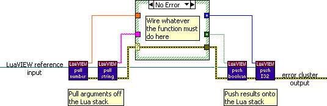

By creating LabVIEW-side functions (aka LuaVIEW functions) you can make your LabVIEW code callable from Lua. For some examples see the VIs contained in the luaview/functions/ directory. They implement the functions documented here. The luaview/examples/VI templates/ directory contains templates that can be specialised when implementing one of the various LuaVIEW function types. The templates are fairly self explanatory, but there are some details worth knowing. These are covered in this appendix:
For all types of LuaVIEW function, the following basic steps must be wired in the very same manner:
An example of how to wire up a function, in this case with two parameters and two results, is shown below. How the corresponding diagram is tied into the rest of the system differs between function types and will be discussed later.

On the input side, the diagram is provided with a reference to a LuaVIEW state. This reference can be used to access the Lua stack that is used to pass data between LabVIEW and Lua. Pull all passed arguments until the stack is empty. If your function takes a variable number of arguments, first use the Stack Elements advanced VI to determine the number of arguments that were passed, and pull them accordingly. Once your function has done what it must do, push any results. Both the pull and push API VIs are polymorphic. The supported data types and their representations and conversions are detailed here.
On the output side, the function diagram can pass out an error cluster. When your function completes successfully, a "no error" value should be passed out. When an error occurs that causes your function to not be able to complete its work, the corresponding error cluster must be passed out.
On the Lua side, LuaVIEW functions are assigned to named variables so that they can easily be called. You must therefore specify a function name that is a valid Lua identifier. This means that it must start with a letter or an underscore with the remainder being made up of alphanumerical characters and/or underscores. Also, Lua function names may not collide with reserved names such as Lua keywords. Try to choose a function name that reflects what the function does. It is advisable but not mandatory to start the function name with a lowercase character. This matches the widely used naming convention that has variables start with lowercase, "classes" start with uppercase, and "constants" in all uppercase.
You can optionally specify a table name as a prefix, which must also be a valid identifier. If you do not do so, the function name is set as a global Lua variable. If you do specify a table name, a table will be created as a global variable with that name, and all functions that use that table prefix are put into that table. This allows functions with related functionality to be grouped into what can be said to be function libraries. Functions that work as methods on a particular type of LuaVIEW object are best grouped under a table that starts with an uppercase letter so that it has the appearance of a class. This also allows them to be easily attached to new object instances
The above describes how to choose a function name. To learn how the chosen name can be attached to your function's implementation so that it automatically gets set on the Lua side, read on.
Every LuaVIEW function requires a calling synopsis. This is a text string that summarizes how the function must be called and what return values can be expected on its completion. This serves a number of purposes:
The calling synopsis includes the function name, an optional table prefix, as well as parameter (a function has parameters and should be called with corresponding arguments) and result lists. Its syntax is as follows:
[<type>:<result>,...=][<table>.]<function>([<type>:<parameter>],...)
The <function> and <table> fields hold the
corresponding names. The
square brackets denote optional elements. The ellipses (...) denote zero or more
repeats of the prior item. Any <type> fields should be filled in with an
abbreviation string specifying the data type required from Lua or passed back to
Lua. This can be one of
any, bool, num, obj, ref, str, tab,
I8, U8, I16, U16, I32, or U32. The <result> and <parameter> fields should be given
short, descriptive names that can pass as Lua identifiers. When the function takes a variable number of arguments, or returns a variable
number of results, this should be denoted in the synopsis by adding square
brackets around the last item in the parameter or result list and/or by trailing
the list with an ellipsis.
To see how this works, consider the following examples:
foo()foo.bar()foo(num:x)foo(num:y,str:s)bar(num:z,[str:t])bar(bool:flag,str:first,...)bool:ok,num:result=bar([any:thing],...)The means by which the calling synopsis of a function is specified and handled is dependent on the function type.
The data type abbreviations specified for the function parameters in the calling synopsis are used to perform automated argument checking. This is done prior to the actual function call. When mismatching arguments are passed when calling a LabVIEW-side function, an explanatory error is automatically generated without requiring extra work when implementing the function. The type codes specified in the synopsis place the following requirements on the Lua items passed as arguments:
The built-in argument checking is a first line of defence against typos and other programming errors in scripts that call LabVIEW. Often, functions require argument values that cover a more specific range than what is allowed by argument checking. In such cases, make sure that your function will fail in a reasonable manner when passed an out-of-range or invalid value. If not, perform some further argument checks, and throw explanatory errors, as part of your function's implementation.
All but any and tab map to a particular LabVIEW data type that can be directly pulled. For such parameters, the function's implementation can make do with a series of pull VI calls that matches the parameter list in the synopsis. In case of an any parameter, the type being pulled is typically conditional. In case of a tab parameter, the argument is typically pulled as flat data into an array or cluster.
LuaVIEW function results are not checked. The rationale is that scripts are likely to be frequently changed, which might cause typos in arguments to be introduced. Results, on the other hand, are determined by the LabVIEW diagram of the function, which is unlikely to change, and should have been tested before deployment. The type codes in the result list of the synopsis merely serve to inform the script writer of what result values can be assumed to be returned. When you specify a result type code, you promise that the script writer can assume one of the following:
All but any and tab map to LabVIEW data types that can be directly pushed. Often, the range of values being pushed is more restricted than indicated by the type code. When knowledge of these further restrictions is useful when writing scripts, specify them in the function's documentation. Sometimes, you may wish to specify a less specific result type code in the synopsis than the type being pushed, e.g. when it is not desirable that a scripts assumes an integer result to be integer because a future implementation might instead return floating point values. When a result can be of a variable type, specify the any type code and detail in the function's documentation what types these can be. To return a table, push a cluster or array as flat data and document its content.
When it is doable for a function to recover from an error, or to retry a flaky operation until it succeeds, the function should preferably be written to attempt such recovery. For most errors though, recovery is impractical or impossible so that the function must fail. To have a function fail, simply return the error on the error out wire. On returning with an error to Lua, the stack will be cleared: no additional stack manipulation is required when the function fails before all arguments are pulled or after results have partially been pushed. As detailed in the manual section on error handling, the handling can be separated from error sources so that LuaVIEW functions need not concern themselves with what happens to any errors they return.
Both public and private functions are created in the very same manner. Their difference stems from how you register them with Lua. To turn a function VI into a public function, add it to the public function registry. This makes the VI available to all subsequently started Lua scripts. The VI of a public function VI cannot be unloaded while scripts other than those that that specifically refrain from using public functions (by using Open Private State) have an open LuaVIEW state. Function VIs become private when added to the private function registry of a LuaVIEW state. When all states with which a private function was registered are closed (which normally happens after the corresponding scripts are done), the function VI is unloaded unless something else is holding a reference to it.
Usually, you will want to make function VIs public so that they can be called by all scripts. Private registration can be used when you want the VI to load and unload on demand or the function to be available only to select scripts. To create a public or private function, make a copy of an existing function VI or clone the "luaview/examples/VI templates/function_template_lua.vit" template and wire up the requisite functionality. Function VIs are dynamically called. For this to work, they must all adhere to the same connector pane layout, which has a LuaVIEW reference as input and an error cluster as output.
The function name and optional table are extracted from the file name. For this to work, the filename must accord to the following syntax:
[re_][<table>.]<name>[_alternate<id>]_lua.vi
This ensures that the file name of a function VI is always in-sync with the name of that function as visible to Lua. To change the function name, simply rename the VI. The "_lua.vi" postfix allows the VI to be recognized as being a function. This is used when automatic registration of public functions is enabled (which is the default setting in "glb_LuaVIEW Configuration Globals.vi") and allows the "Function Manager" to discriminate function VIs from other VIs. The optional "re_" prefix can be used to mark a function as being reentrant. This is not mandatory, but it is advisable since the reentrancy flag is hidden yet can markedly affect the behaviour of a VI. For this reason, all reentrant VIs that are part of the LuaVIEW distribution use this prefix. To make a function VI reentrant, simply set the checkbox that can be found in the VI properties dialog under the "Execution" section. As a general rule, functions should only be made reentrant when they are frequently used and run for a protracted time, or wait around for asynchronous actions to complete. The how and why of reentrancy is detailed in the section on reentrance.
The optional "_alternate<id>" postfix, which does not affect the function name, can be used to override function VIs. LabVIEW cannot load multiple VIs with the same name. LuaVIEW cannot allow the unloading of a function VI that might still be in use by scripts. To override a function VI while scripts are running, this postfix can therefore be used as it allows the same function name for a different VI name. When overriding the same function multiple times, use the additional "<id>", which can be anything unique. Note that the overriding function VI is available only to scripts that start after it is publicly registered. Private registration always must provide the VI name so that the version of a function to use is always explicit in the using script.
For LuaVIEW function VIs, the calling synopsis need not be directly specified. Instead, these functions must be documented via the "Edit Function Documentation" window that can be opened via the "Function Manager". This window will guide you through the documentation process and ensures that the proper documentation format is adhered to. The synopsis is automatically constructed from this documentation as well as the function VI name. When saving the documentation from the edit window, it and the synopsis are persisted with the function VI file (using a LabVIEW metadata mechanism). This makes the synopsis available to LuaVIEW when a function VI is registered.
For an indexed or module function, only a synopsis is required. More extensive documentation is optional. The implementation of such a functions is typically contained in a case structure case selected via an index. By casting the index to an enum whose items define the function synopses, the case structure is automatically provided with a limited degree of documentation. Using a case structure allows multiple indexed or module functions to be implemented on a single diagram. Consequently, such functions can easily exchange data via shared state placed in an un-initialised shift register. To learn more examine "Lua-Driven State Machine.vit" and "Module Template.vit" in the luaview/examples/VI templates/ directory.
Reentrant functions can be called from multiple scripts simultaneously while
non-reentrant functions block additional callers while a prior call is still
executing so that calls always execute one after the other. All C
functions included in the LuaVIEW toolkit are reentrant. Whether a C function in
a library that you dynamically link via loadlib is reentrant
depends on the library. For Lua-implemented functions, reentrancy is irrelevant
since they are compiled independently for different LuaVIEW states, and each
state has an independent virtual machine. Only recursive Lua functions need to
worry about multiple ongoing calls. Public and private functions are reentrant
when their function VI is set to execute reentrantly as described in the
previous section.
The manner in which LabVIEW achieves reentrancy is somewhat peculiar when compared to other languages. On loading a VI that calls a reentrant VI on its diagram, LabVIEW instantiates a new data space for that reentrant VI so that all storage is duplicated for each of its diagram instances. This includes the storage associated with further reentrant VIs called from that reentrant VI. Thus, each diagram instance of a reentrant VI causes allocation of a tree of data spaces when nested reentrant VIs are used. This can eat up lots of memory and increase VI load times. To achieve good concurrency at reasonable cost, one should make only VIs that are likely to be contended reentrant. Another reason for making a VI reentrant is as a convenient means for that VI to retain state for a particular diagram instance across multiple calls.
For reentrant function VIs called from Lua there is no equivalent of a "diagram instance". Instead, what happens is that the data space of the reentrant VI is instantiated for each LuaVIEW state from which it is called. This happens on the first call made to that reentrant VI. Consequently data spaces are allocated only as needed. Calls to a re-entrant LuaVIEW function made on different script lines from the same LuaVIEW state therefore all share the same data space. Normally this is irrelevant, since typical functions will not retain state across calls. But it can be used to easily implement per-LuaVIEW-state storage on the LabVIEW side, e.g. using an un-initialised shift register.
Functions of the same module instance are never reentrant even when the module is instantiated off a reentrant VI. What is more, the various functions of the same module instance are mutually blocking. Since modules can encapsulate state on which its functions operate, the serialized access this enforces is actually desirable. It does however imply that a particular module should preferably not be made to contain overly much functionality as this might lead to contention, that is, one caller having to wait for another caller.